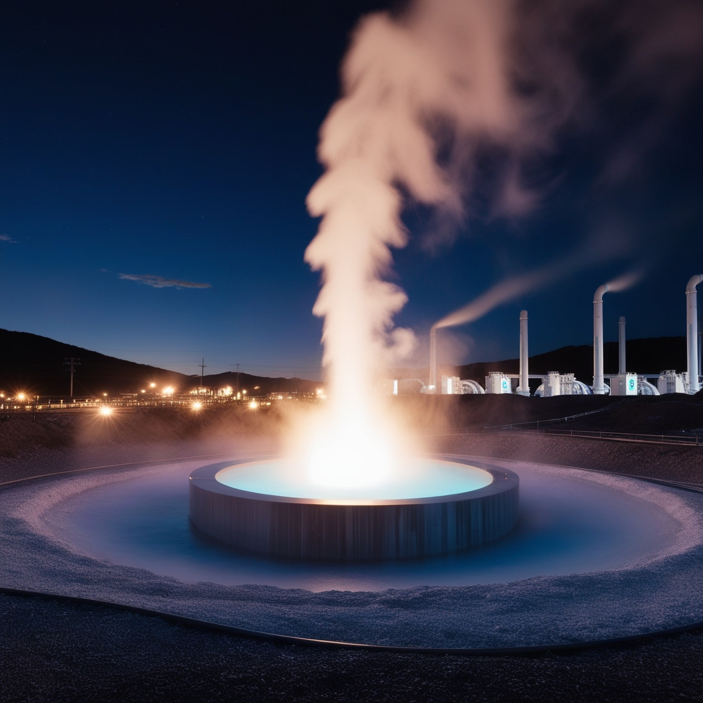

Produccion de energia renovable por fuente
Grafico Japon 2020
Produccion de energia renovable por fuente
Este gráfico nos enseña la producción por fuente de energía en el país de Japón durante el año 2020, evidenciandose la utilidad de la implementación de la energía geotérmica. Tomado de Kaggle (Hydropower Consumption, wind generation, solar energy consumption, biofuel production e Installed geothermal)
